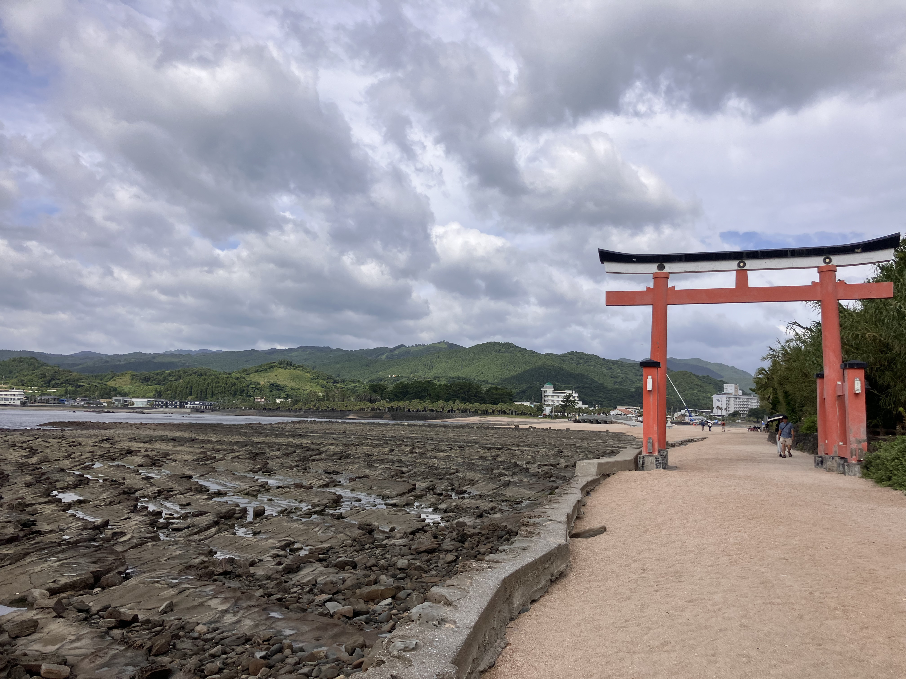
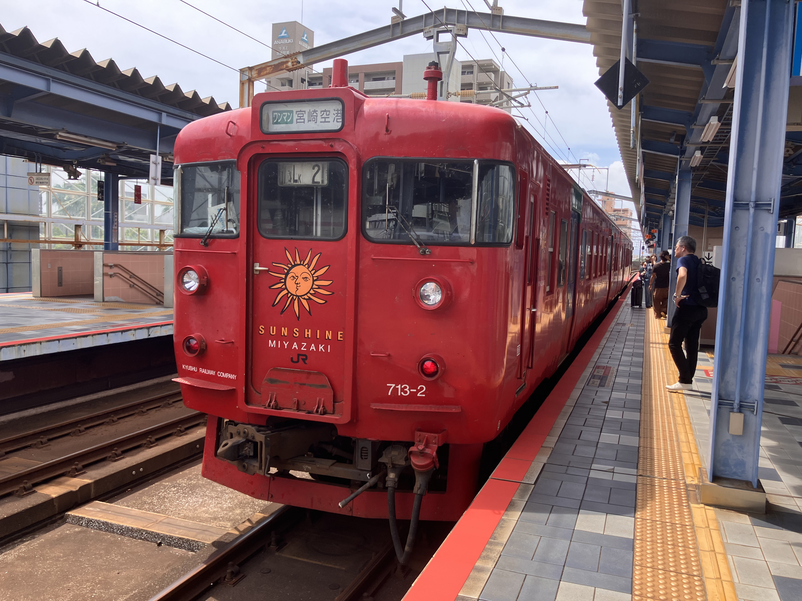
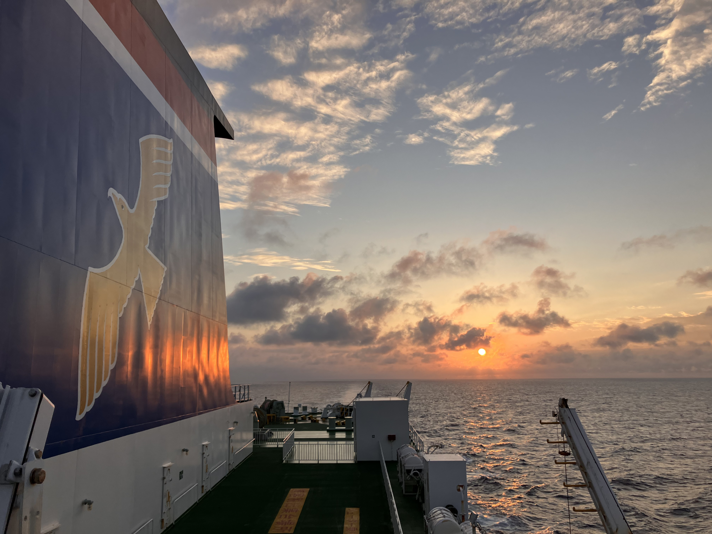

今回私は一人で宮崎にいきました。宮崎はかなり暑く外に出るのもなかなか嫌でしたが新しい風に触れることができました！！
私は宮崎に行く前に神戸市三宮駅に到着し、徒歩で神戸港にいきました。今回は一人旅ということで船で行くことにしました！
初めての長距離の船でしたが幸い船酔いもせず快適に寝ながら行くことができよかったです
8月4日に神戸港を出港し、5日の朝につき宮崎港へ着きました、今まで長距離といえば飛行機、新幹線がほとんどだったのでとても海から来た事に新鮮味を感じてしまいました()
5日6日は宮崎市、延岡市、都城市、新富町へ電車でいき町を散策し地域の食堂や海を堪能しました
一番宮崎で驚いたのは電車の本数が延岡も都城も1時間に1本しかなかったのはかなり衝撃的でしたましてやその先に行く電車は
鹿児島へ行くのがお昼は特急しかなかったり大分にいくには特急を使うしかないほど本数が少なかったです
最終日は宮崎氏の南の青島別名"鬼の洗濯板"で有名な場所へ観光しに行きました
青島は洗濯板でも有名ですがリゾート地としても栄えてました(ただ行ったときは朝8時だったので人はまばらでした)
帰りは飛行機を予約しており安心していたところ搭乗寸前にまさかの大雨落雷がおきこれがのちに"線状降水帯"になり
帰るのが2時間遅くなりました(泣)
  